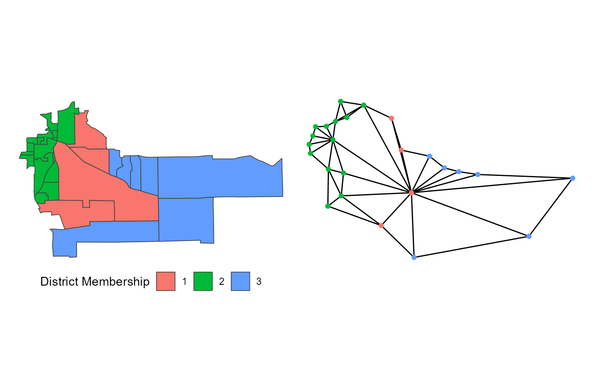
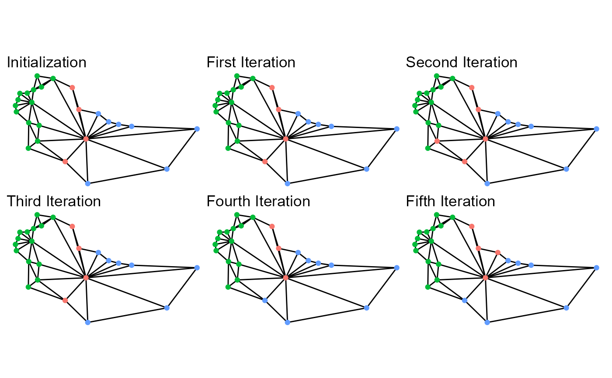
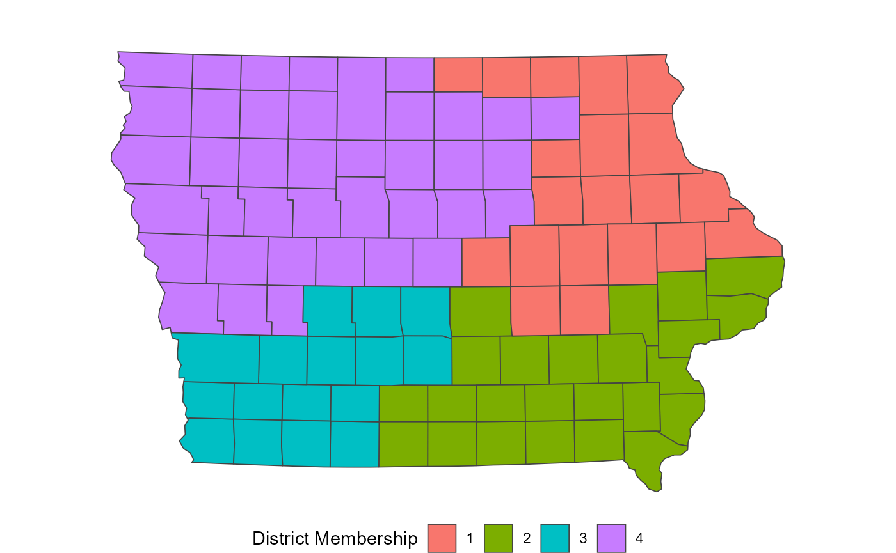
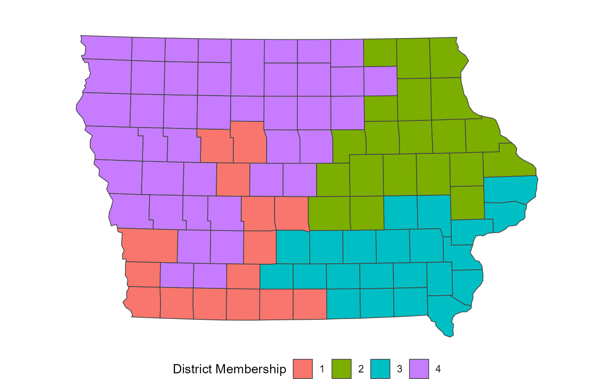
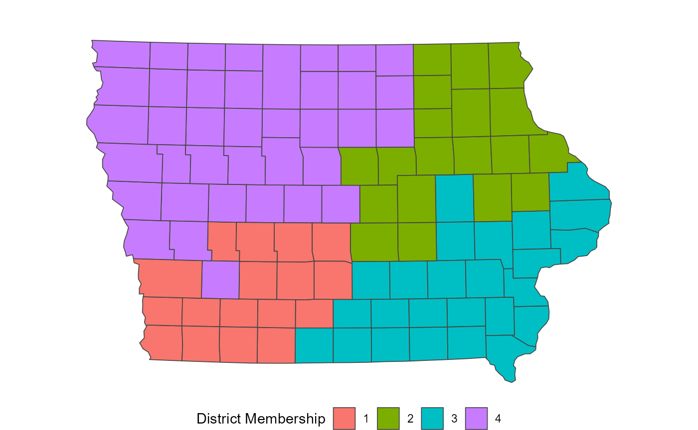
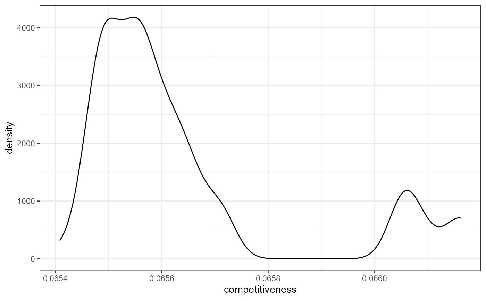
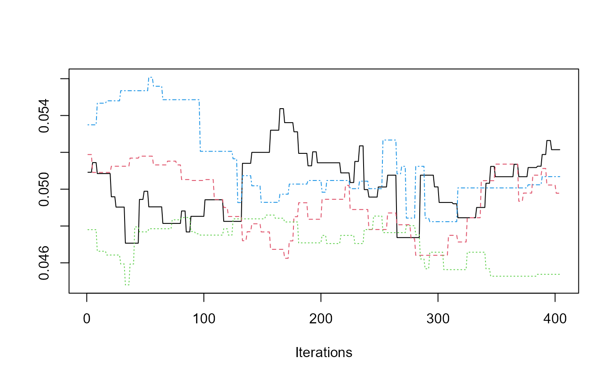
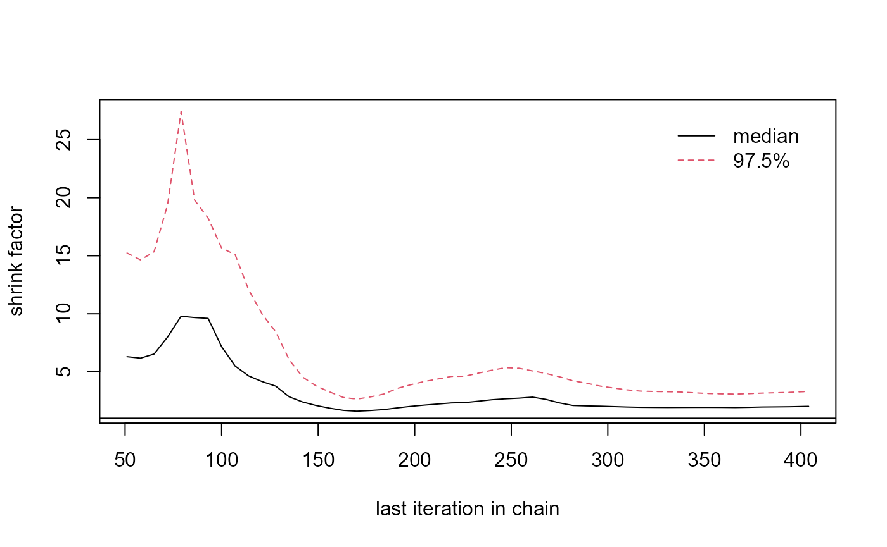
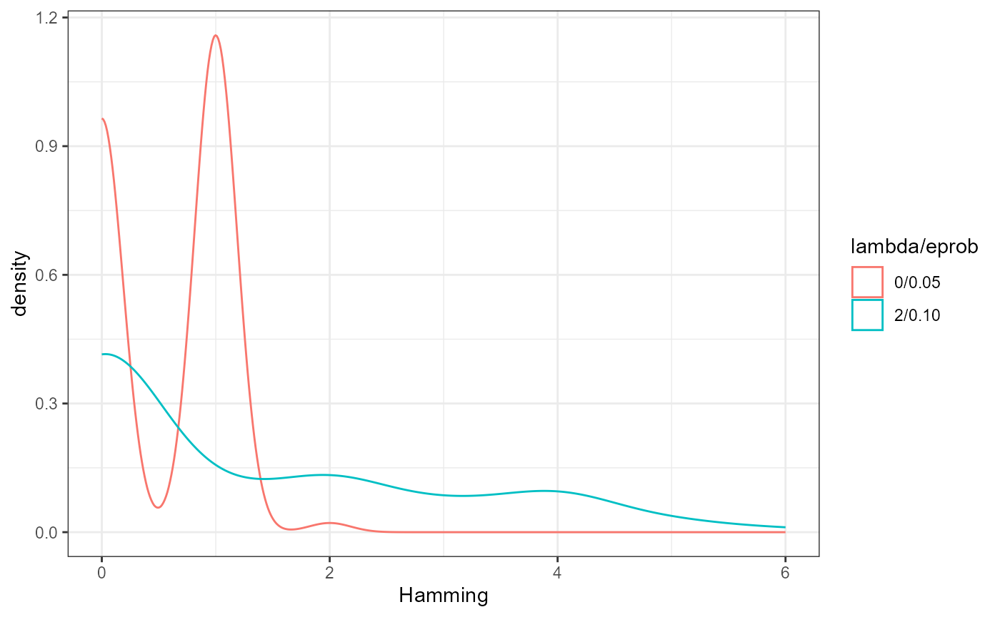

library(redist)
library(ggplot2)
library(dplyr)
library(patchwork)
# set seed for reproducibility
set.seed(1)The redist package is designed to allow for replicable
redistricting simulations. This vignette covers the Flip Markov Chain
Monte Carlo method discussed in: Automated
Redistricting Simulation Using Markov Chain Monte Carlo.
data(fl25)
data(fl25_enum)
plan <- fl25_enum$plans[, 7241]
fl25$plan <- plan
fl_map <- redist_map(fl25, existing_plan = plan, pop_tol = 0.2, total_pop = pop)
#> Projecting to CRS 3857
constr <- redist_constr(fl_map) %>%
add_constr_edges_rem(0.02)
set.seed(1)
sims <- redist_flip(map = fl_map, nsims = 6, constraints = constr)
#>
#>
[36m──
[39m
[1m
[31mredist_flip()
[39m
[22m
[36m───────────────────────────────────────────────────────────────
[39m
#>
#> ──
[1m
[1m
[31mAutomated Redistricting Simulation Using Markov Chain Monte Carlo
[39m
[1m
[22m ──
#>
[36mℹ
[39m Preprocessing data.
#>
[36mℹ
[39m Starting swMH().
#>
[32m■■■■■■
[39m 17% | ETA: 0s | MH Acceptance: 1.00
[32m■■■■■■■■■■■■■■■■■■■■■■■■■■■■■■■
[39m 100% | ETA: 0s | MH Acceptance: 1.00The flip algorithm is one of the more straightforward
redistricting algorithms. Beginning with an initial partition of a
graph, it proposes flipping a node from one partition to an adjacent
partition. By checking that the proposed flip meets basic constraints,
such as keeping partitions contiguous and staying within a certain
population parity, it ensures that all proposed new partitions are also
valid partitions. The implementation within redist is a bit
more advanced that this, as it allows for multiple flips and rejecting
valid partitions based on a Metropolis Hastings algorithm. The following
walks through the basics of this algorithm to provide an introduction to
using flip correctly and efficiently.

Suppose we are redistricting this small map above on the left. To use
the flip algorithm, we need to consider the adjacency graph
that underlies this map, which is above on the right. Each of the 25
precincts on the left are displayed as a node on the right, connected if
they are contiguous on the map. If we use the above district as an
initial plan, we can then run flip for a few steps.

While this map is extremely small, the five iterations give a basic idea of what is going on behind the scenes. At each iteration, it searches the boundary for possible swaps, selects one, and then accepts or rejects the proposals. With very weak constraints, like those used to create the above example, almost every swap is accepted. Even then, though, it doesn’t guarantee that some iterations won’t repeat other plans sampled. In fact, in the above, the second iteration is the same plan as the initialization.
This possibility is very important for ensuring that the sampled plans are representative of the desired target distribution, which is controlled by the constraints chosen. The possible constraints are discussed below, as is information on setting up simulations and some advice on ensuring that your simulations are efficient.
Flip is incredibly powerful for local exploration. If you can make large changes to a summary statistic of interest without making large changes to the map itself, this may tell an important story of what went into making the map.
Flip is one of the easiest to understand algorithms and has theoretical guarantees behind it. This can make it especially useful when the audience of interest does not have an advanced background in mathematics or statistics.
Flip has the power to make less compact maps than many other algorithms. This can be especially powerful when a blind allegiance to compactness makes otherwise viable plans appear to be outliers.
Our implementation of flip has many more Gibbs
constraints than our other implementations. This can allow you to
consider different forms of partisan and
countysplit constraints among others.
However, with these strengths do come weaknesses. Like most Markov
Chain Monte Carlo methods, convergence can’t be shown, it can only be
suggested. Diagnostics, like those in the section on
diagnostic plots, can help ensure that convergence is likely, but
can never show that it has indeed happened. Additionally,
flip makes relatively small moves per iteration, so many
more iterations are needed to move around the space. If your map is
particularly large, you may require several hundred iterations to make
the map substantively different, which leads to thinning
the chain, which is dropping many sequential iterations. However,
thinning doesn’t make the algorithm more efficient, so you
still need to work through those plans, which comes with a time
cost.
One of the keys to ensuring good performance is the choice of
initialization. In some cases, a starting point may be obvious, such as
when you want to explore the local area around an existing map. If
that’s the use case, then it is straightforward to use that plan as the
starting point. However, if the goal is to understand the larger space
of possibilities, then starting from just one map can be misleading.
Why? Since constraint tuning is not a perfect science, you could be
setting the constraints too strong and, if that map is very good on some
dimension, the flip algorithm may have difficulty getting
away from that point without a very large number of iterations.
Our implementation defaults to using the Sequential Monte Carlo (SMC)
algorithm via redist_smc() to create an initial partition
of the districts, if no district is provided.
While the implementations of Random Seed and Grow (RSG)
and Compact Random Seed and Grow (CRSG) via
redist.rsg() and redist.crsg do not sample
from a defined target distribution, they can serve as useful
initializations for flip as they help provide a more
diverse set of starting states. SMC is often faster and
provides more theoretical guarantees, but tends to sample very compact
districts, even when decreasing the compactness constraint. As such,
when trying to decide if chains have likely converged or not, it can be
misleading to only check chains that start from very compact states.
With the basics of what the flip algorithm is doing
down, we can proceed into how to use the algorithm.
To begin running the MCMC algorithm, we have to provide some basic
information, typically beginning with a shapefile. The below loads an
Iowa dataset included within the redist package and plots
the actual congressional districts from 2012-2021. (Iowa is a favorite
choice for redistricting simulation examples, as it requires keeping
counties together in plans which allows us to use the counties as the
unit for redistricting, rather than thousands of precincts.)
data(iowa)
redist.plot.map(iowa, plan = cd_2010)
map_ia <- redist_map(iowa, existing_plan = cd_2010, pop_tol = 0.05)From there, we need to build an adjacency graph which identifies
which counties are touching which other counties on a map. If you have
an existing plan, it’s generally advised to supply this to the optional
plan argument to ensure that the existing plan is a valid,
connected plan. If you get a warning, the geomander R package
can help solve potential issues.
In addition, we need population for each unit. We’ve included
iowa$pop as the total population as of the 2010 Census.
From there, we have the basic information that we need to run our first
simulation. The below indicates that we are simulating 1000 plans (with
nsims) for the state of Iowa that have at most a population
parity deviation of 0.05 (with pop_tol).
sims <- redist_flip(map_ia, nsims = 100)
#>
#>
[36m──
[39m
[1m
[31mredist_flip()
[39m
[22m
[36m───────────────────────────────────────────────────────────────
[39m
#>
#> ──
[1m
[1m
[31mAutomated Redistricting Simulation Using Markov Chain Monte Carlo
[39m
[1m
[22m ──
#>
[36mℹ
[39m Preprocessing data.
#>
[36mℹ
[39m Starting swMH().
#>
[32m■
[39m 1% | ETA: 0s
[32m■■■■■■■■■■■■■■■■■■■■■■■■■■
[39m 84% | ETA: 0s | MH Acceptance: 0.62
[32m■■■■■■■■■■■■■■■■■■■■■■■■■■■■■■■
[39m 100% | ETA: 0s | MH Acceptance: 0.65The printed output can be silenced by setting
verbose = FALSE, however it displays very important
information. First, it displays when preprocessing begins and when the
algorithm actually starts. Each 10% of the way through the
flip algorithm, it outputs the current estimated Metropolis
acceptance. Here, we’ve specified no Gibbs constraints, so the
acceptance will always be near 100%.
The output is an object of class redist.
class(sims)
#> [1] "redist_plans" "tbl_df" "tbl" "data.frame"The sims object includes various pieces of information
that were tracked while simulating, but we focus on
get_plans_matrix(sims), which is a matrix that contains the
plans.
dim(get_plans_matrix(sims))
#> [1] 99 101Checking the dimensions shows that each plan is saved as a column, where each row is a precinct. From this, we can extract a single plan as we would from a normal matrix, like below, where we plot the final simulated plan.
redist.plot.map(shp = iowa, plan = get_plans_matrix(sims)[, 100])
Now, this plan is incredibly non-compact, which can be an issue.
However, we should expect this type of outcome, as we didn’t include a
compactness constraint while simulating. Thus, the only things checked
were contiguity and that no plan would be outside of the
pop_tol set above. Since there are many more non-compact
plans than compact plans in the space of all redistricting plans, we end
up with highly non-compact districts. We can fix this by specifying a
constraint, as below:
constr <- redist_constr(map_ia) %>% add_constr_edges_rem(0.4)
sims_comp <- redist_flip(map_ia, nsims = 100, constraints = constr)
#>
#>
[36m──
[39m
[1m
[31mredist_flip()
[39m
[22m
[36m───────────────────────────────────────────────────────────────
[39m
#>
#> ──
[1m
[1m
[31mAutomated Redistricting Simulation Using Markov Chain Monte Carlo
[39m
[1m
[22m ──
#>
[36mℹ
[39m Preprocessing data.
#>
[36mℹ
[39m Starting swMH().
#>
[32m■
[39m 1% | ETA: 0s
[32m■■■■■■■■■■■■■■■■■■■■■■■■■■■■■■■
[39m 100% | ETA: 0s | MH Acceptance: 0.61The first arguments as the same, but this adds three key arguments.
First, setting constraint to any combination of the nine
implemented constraints allows us to specify the target distribution.
Setting constraintweights = 0.4 means that we want to put a
relatively weak weight on the compactness, though a weak constraint
still does a lot of work. There are four compact
constraints implemented currently. The recommended is to use
edges-removed because it can be calculated very
quickly.
If we plot the final map sampled from the above code, we can see that it is far more compact.
redist.plot.map(shp = iowa, plan = get_plans_matrix(sims_comp)[, 100])
When running larger redistricting analyses, one important step is to run multiple chains of the MCMC algorithm. This will also allow us to diagnose convergence better, using the Gelman-Rubin plot, as seen in the section on Diagnostic Plots.
On Windows and in smaller capacities, it is useful to run the
algorithm within an lapply loop. First, we set up the seed
for replicability and decide on the number of chains and
simulations.
set.seed(1)
nchains <- 4
nsims <- 100Here, we opt to initialize using the SMC algorithm. When
we want to initialize without providing an initial partition, we need to
specify the number of districts, ndists.
constr <- redist_constr(map_ia) %>% add_constr_edges_rem(0.4)
map_ia <- redist_map(iowa, ndists = 4, pop_tol = 0.05)
flip_chains <- lapply(1:nchains, function(x){
redist_flip(map_ia, nsims = nsims,
constraints = constr, verbose = FALSE)
})In Unix-based systems, this can be run considerably faster by running this in parallel.
mcmc_chains <- parallel::mclapply(1:nchains, function(x){
redist_flip(map_ia, nsims = nsims,
constraints = constr, verbose = FALSE)
}, mc.set.seed = 1, mc.cores = parallel::detectCores())redist_flip()
The new, tidy interface to functions with redist
introduces a pair of key objects, redist_map and
redist_plans. The Get Started
page goes into depth about these, but this shows the basics of how
to work with the flip algorithm within the newer
interface.
As in the standard interface, we need a data set to work with. This example will also follow with using the included Iowa data.
data(iowa)Rather than building the adjacency graph manually, here we can set
this up using redist_map which will build it an add it as a
column.
iowa_map <- redist_map(iowa, existing_plan = cd_2010, pop_tol=0.01)We set a population tolerance of 1%. While this is generally a good
population parity tolerance for most simulations, be careful when using
the default within flip. If your starting partition sits
outside of that population deviation, flip may take a
very, very long time to find a valid partition to
flip.
Now, we can pass the redist_map object to
redist_flip to begin simulating.
tidy_sims <- redist_flip(iowa_map, nsims = 100)
#>
#>
[36m──
[39m
[1m
[31mredist_flip()
[39m
[22m
[36m───────────────────────────────────────────────────────────────
[39m
#>
#> ──
[1m
[1m
[31mAutomated Redistricting Simulation Using Markov Chain Monte Carlo
[39m
[1m
[22m ──
#>
[36mℹ
[39m Preprocessing data.
#>
[36mℹ
[39m Starting swMH().
#>
[32m■
[39m 1% | ETA: 0s
[32m■■■■■■■■■■■■■■■■■■■■■■■■
[39m 77% | ETA: 0s | MH Acceptance: 0.79
[32m■■■■■■■■■■■■■■■■■■■■■■■■■■■■■■■
[39m 100% | ETA: 0s | MH Acceptance: 0.80redist_flip’s constraint includes a relatively weak
compactness constraint by default because simulating compact maps is far
more efficient and completely non-compact maps are not super useful for
most purposes.
You can override this by making a blank redist_constr
object
cons <- redist_constr(iowa_map)Then, you can pass this to redist_flip.
tidy_sims_no_comp <- redist_flip(iowa_map, nsims = 100, constraints = cons)
#>
#>
[36m──
[39m
[1m
[31mredist_flip()
[39m
[22m
[36m───────────────────────────────────────────────────────────────
[39m
#>
#> ──
[1m
[1m
[31mAutomated Redistricting Simulation Using Markov Chain Monte Carlo
[39m
[1m
[22m ──
#>
[36mℹ
[39m Preprocessing data.
#>
[36mℹ
[39m Starting swMH().
#>
[32m■■■■■■■■■■■
[39m 34% | ETA: 0s | MH Acceptance: 1.00
[32m■■■■■■■■■■■■■■■■■■■■■■■■■■■■■■■
[39m 100% | ETA: 0s | MH Acceptance: 0.97redist_flip outputs a redist_plans
object.
class(tidy_sims)
#> [1] "redist_plans" "tbl_df" "tbl" "data.frame"To extract the plans, use get_plans_matrix().
plans <- get_plans_matrix(tidy_sims)Alternatively, you can directly use functions on the
redist_plans object. For example, if we want to measure the
competitiveness of each plan:
tidy_sims <- tidy_sims %>%
mutate(competitiveness = compet_talisman(pl(), iowa_map, rvote = rep_08, dvote = dem_08))
tidy_sims %>%
ggplot(aes(x = competitiveness)) +
geom_density() +
theme_bw()
For more information on using redist_plans objects, see
the Get Started page.
When using the MCMC algorithms, there are various useful diagnostic
plots. The redist.diagplot function creates familiar plots
by converting numeric entries into mcmc objects to use with
coda.
We use the dissimilarity index in Massey and Denton 1988 as a summary
statistic for the following examples. This can be computed with
seg_dissim. In this case, we create a Republican
dissimilarity index. We can work with two examples, the first is a
single vector of the segregation index, while the second is a list of
vectors, with one vector for each chain.
seg <- by_plan(seg_dissim(tidy_sims, iowa_map, rep_08, pop))The first three plots only need a single index.
redist.diagplot(seg, plot = "autocorr")
redist.diagplot(seg, plot = "densplot")
redist.diagplot(seg, plot = "mean")As examples for the next two plots, we can use the example above which ran 4 chains. This is the same index, but computed for each chain.
seg_chains <- lapply(1:nchains, function(i) {
seg_dissim(flip_chains[[i]], iowa_map, rep_08, pop)
})
redist.diagplot(sumstat = seg_chains, plot = "trace")
redist.diagplot(sumstat = seg_chains, plot = 'gelmanrubin')
When using the flip algorithm, the most important and
difficult step is setting the right constraint weights. While there may
be some general pieces of advice for doing so, no advice can replace
working with your data. The bottom line is that every data set is a bit
different. What works for one state’s redistricting process, with the
data specific to that state at that time may not transfer to another
state or municipality or school district. The general process of finding
what works might be very similar, but getting the right set of
constraint weights and other parameters will vary immensely. Even
starting from a different plan within the same time and place can change
the weights that perform best. Like most things, the key to tuning
flip is patience. Going for a full scale simulation without
testing some parameter configurations is likely an inefficient use of
time and computing power.
The following highlights some advice on how to tune flip
to make it work for your particular redistricting problem. For the
advice, we’ll use the following example:
data(iowa)
iowa_map <- redist_map(iowa, existing_plan = cd_2010, pop_tol = 0.02, total_pop = pop)
cons <- redist_constr(iowa_map) %>%
add_constr_edges_rem(0.5) %>%
add_constr_pop_dev(100)
sims <- redist_flip(map = iowa_map, nsims = 100)
#>
#>
[36m──
[39m
[1m
[31mredist_flip()
[39m
[22m
[36m───────────────────────────────────────────────────────────────
[39m
#>
#> ──
[1m
[1m
[31mAutomated Redistricting Simulation Using Markov Chain Monte Carlo
[39m
[1m
[22m ──
#>
[36mℹ
[39m Preprocessing data.
#>
[36mℹ
[39m Starting swMH().
#>
[32m■
[39m 1% | ETA: 0s
[32m■■■■■■■■■■■■■■■■■■
[39m 58% | ETA: 0s | MH Acceptance: 0.60
[32m■■■■■■■■■■■■■■■■■■■■■■■■■■■■■■■
[39m 100% | ETA: 0s | MH Acceptance: 0.55One of the first things to check when working with flip
is the Metropolis Hastings ratio. It is printed to the console when
verbose = TRUE. If you have silenced printing or warnings,
the output saves the Metropolis Hastings decisions. You can check the
acceptance ratio in a redist_plans object with
mean(sims$mhdecisions, na.rm = TRUE)
#> [1] 0.55Reference plans included in the object will not have an
mhdecision, so you can remove them with
na.rm = TRUE.
The goal is to generally have the Metropolis Hastings ratio lie between 20% and 40%. If simulating with only a single parameter, the goal is generally to be near 40%, while with many parameters, you likely want to be near 20%. If over the course of many simulations you find yourself just above or just below, that probably isn’t a problem if the simulations are in the right probability space.
lambda and eprob
lambda and eprob both control the amount of
movement within flip. They can be very powerful things to
increase. lambda defaults to 0, while eprob
defaults to 0.05. Each of these parameters leads to fairly small
movements between sequential iterations of the algorithm.
sims_new <- redist_flip(map = iowa_map, nsims = 100, constraints = cons,
eprob = 0.10, lambda = 2, verbose = FALSE)
mean(sims_new$mhdecisions, na.rm = TRUE)
#> [1] 0.46In this example, we’ve increased each of these.
lambda = 2, up from its default of 0, while
eprob = 0.10, up from its default of 0.05.
What’s going on here can characterized fairly well by the Hamming
distance between sequential runs.
dists <- redist.distances(plans = get_plans_matrix(sims))$Hamming
dists_new <- redist.distances(plans = get_plans_matrix(sims_new))$Hamming
adj_dists <- rep(NA_integer_, 100)
adj_dists_new <- rep(NA_integer_, 100)
for(i in 1:100){
adj_dists[i] <- dists[i, i + 1]
adj_dists_new[i] <- dists_new[i, i + 1]
}
tibble(Hamming = c(adj_dists, adj_dists_new),
`lambda/eprob` = c(rep('0/0.05', 100), rep('2/0.10', 100))) %>%
ggplot() +
geom_density(aes(x = Hamming, color = `lambda/eprob`)) +
theme_bw()
lambda controls the number of components swapped between
each iterations, while eprob controls the size of the
swapped partitions. Increasing each of this values can be important for
increasing the amount of movement between outputted plans. These can be
adjusted automatically using adapt_lambda and
adapt_lambda when starting a simulation, though adjusting
them manually to fit your problem is better practice, as it leads to
more control over the process.
pop_tol
Sometimes a starting map sits in a neighborhood of maps that isn’t very conducive to using it as a starting point. This is most often characterized by running a single iteration that runs (seemingly) forever. A typical fix for this is to weaken the population tolerance and use a Gibbs constraint to pull the simulations back into the target range. I’ve done this for the tuning example, even though it’s unnecessary.
After simulating, if there is a hard constraint to consider, we can check the parities:
sims <- sims %>% mutate(par = plan_parity(map = iowa_map))And then we can subset to the correct space.
With the right set of parameters, this will lead to a reasonable set of simulations. In this case, we end up with about 10% of the simulations when using a soft constraint, which is not uncommon. In general, you want to aim for as low as a hard population parity as possible, while using a strong weight on the Gibbs population when the hard constraint is above what’s necessary. This helps maximize the efficiency of your simulations, while allowing for additional movement between neighborhoods of valid plans.
More often than not, there are multiple constraints that are important to a redistricting problem. There are two general paths to success when working with more than one or two constraints.
First, you might want to add one at a time, generally starting with
the compactness constraint. If flip doesn’t consider
compactness at all, it has an unfortunate behavior of creating
incredibly non-compact maps. However, with even a very weak compactness
constraint, it performs very well in avoiding those maps that are so
non-compact that they aren’t worthy of consideration. Then you can add
the next constraints once at a time, weakening them a bit each time you
add a new constraint. As above, you want to make sure that your
acceptance rate is between 20% and 40%. If it’s too low, you won’t get
sufficient movement around the probability space and if it’s too high,
you likely aren’t characterizing the probability space you want to
characterize.
The other way to tune is to run a simulation with a kitchen sink type set up.
cons <- redist_constr(iowa_map) %>%
add_constr_edges_rem(0.25) %>%
add_constr_pop_dev(50) %>%
add_constr_compet(10, rvote = rep_08, dvote = dem_08) %>%
add_constr_splits(10, admin = region)Then we can run this for a relatively small number of iterations.
sims <- redist_flip(iowa_map, 100, constraints = cons)
#>
#>
[36m──
[39m
[1m
[31mredist_flip()
[39m
[22m
[36m───────────────────────────────────────────────────────────────
[39m
#>
#> ──
[1m
[1m
[31mAutomated Redistricting Simulation Using Markov Chain Monte Carlo
[39m
[1m
[22m ──
#>
[36mℹ
[39m Preprocessing data.
#>
[36mℹ
[39m Starting swMH().
#>
[32m■
[39m 1% | ETA: 0s
[32m■■■■■■■■■■■■■■■■■■■■■■■■■■■■■
[39m 93% | ETA: 0s | MH Acceptance: 0.77
[32m■■■■■■■■■■■■■■■■■■■■■■■■■■■■■■■
[39m 100% | ETA: 0s | MH Acceptance: 0.75Now, the interesting this here is that adding more constraints actually increased the acceptance probability. This is because correlated constraints can guide the algorithm towards high probability neighborhoods where there are multiple maps which could be considered! To address this, we might want to increase the constraint weight slightly across the board. Had the weights been far too low, we might lower them, particularly on constraints that we are not too worried about.
cons <- cons <- redist_constr(iowa_map) %>%
add_constr_edges_rem(1.5) %>%
add_constr_pop_dev(100) %>%
add_constr_compet(40, rvote = rep_08, dvote = dem_08) %>%
add_constr_splits(20, admin = region)
sims <- redist_flip(iowa_map, 100, constraints = cons)
#>
#> ── redist_flip() ───────────────────────────────────────────────────────────────
#>
#> ── Automated Redistricting Simulation Using Markov Chain Monte Carlo ──
#> ℹ Preprocessing data.
#> ℹ Starting swMH().For example, this new set of constraints might be a good place to simulate at.
Notably, the process of tuning should be guided by the constraint outputs and their relative values. The average compactness value of edges removed that we’re constraining on has a summary like the following:
summary(sims$constraint_edges_removed, na.rm = TRUE)
#> Min. 1st Qu. Median Mean 3rd Qu. Max. NA's
#> 33.00 36.00 36.50 38.18 41.00 46.00 4The population constraint can be summarized as:
summary(sims$constraint_pop_dev, na.rm = TRUE)
#> Min. 1st Qu. Median Mean 3rd Qu. Max. NA's
#> 0.000007 0.000064 0.000129 0.000168 0.000215 0.000633 4These are measured on completely different scales, so it shouldn’t be surprising that population has a much higher weight. This is a constant difficulty in tuning, as the total number of edges on a graph or the volatility of the population isn’t something that’s easily standardized and transferred between maps, unfortunately.
Redistricting simulation is very much statistics rather than hard
science. When working with flip, or any redistricting
sampler, there will be a component that resembles art. Each important
variable needs to be included, but getting every variable to the correct
target space is not necessarily easy. In general, it may be best to
start with one or two constraints and slowly add them to the model. This
can help ensure that one single constraint doesn’t dominate the entire
process.
When starting off, it’s never a bad idea to run a single simulation
to make sure that everything works. If it doesn’t do what you’re
expecting, that’s much better than waiting for 1,000,000 iterations to
run. If that works, try 100 or 1000. Only once you’ve seen that it’s
moving and appears to be moving in reasonable directions should you try
for those large numbers of simulations. Remember that running 1,000,000
steps of flip with completely useless parameters is not a
very good use of time or computing power.
And finally, when in doubt, it never hurts to run a few extra simulations. Once you know that the code is working, it shouldn’t cost much at all to run just a few extra iterations or a few simulations from new starting points. If the results agree with your prior findings, that’s more support for them. If they disagree, then you know what could be wrong and can run even more additional simulations to figure out what’s right!